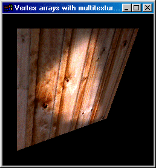

urce source source source source source source source source source source |
[program seven] My 3d card (a matrox g200) doesn't support multitexturing but I wanted to give it a try. This example achieves multitexturing the same way Quake did all those years ago. It uses blending and two texture passes.

We define some
macros to name our textures.
#define MAX_TEXTURES 2
#define WOOD_IMAGE 0
#define LIGHTMAP 1
Function pointer variables are again declared for the vertex array extensions.
[1] PFNGLLOCKARRAYSEXTPROC glLockArraysEXT
= NULL;
[2] PFNGLUNLOCKARRAYSEXTPROC glUnlockArraysEXT = NULL;
[3]
[4] float angle;
We declare our vertex and index arrays as before, but this time we include some
values for texture mapping. Notice that the numbers range from 0.0 to
1.0. There are 4 texture coordinates here, one for each vertex. Remember for an explanation of texture mapping you can go to
...
[1] GLfloat tex_coords[] = { 0.0, 1.0,
1.0, 1.0,
1.0, 0.0,
0.0, 0.0 };
...
There isn't any lighting again in our initialisation function. Lines 3 and 4 get the required extensions, while 6 though 8 setup our textures and naming as in previous programs.
[1] void
init ( void )
[2] {
[3] tgaGetColorEXT ( );
[4] get_CVA_ext ( );
[5]
[6] glEnable ( GL_TEXTURE_2D );
[7] glPixelStorei ( GL_UNPACK_ALIGNMENT, 1 );
[8] glGenTextures ( 2, tex_id );
glBindTexture and our texture loading library both make a come back as they set the textures up. Notice that we free both textures immediately after loading and that the light-map is forced as a LUMINANCE image.
[10] glBindTexture ( GL_TEXTURE_2D, tex_id[WOOD_IMAGE] );
[11] tgaLoadImage ( "board.tga", &woodimage,
TGA_FREE );
[12]
[13] glBindTexture ( GL_TEXTURE_2D, tex_id[LIGHTMAP] );
[14] tgaLoadImage ( "lightmap.tga", &lightmap,
TGA_FREE | TGA_LUMINANCE
);
We perform the usual enabling for vertex arrays - this time notice how we don't use a colour array, the GL_TEXTURE_COORD_ARRAY replaces it.
[16] glEnable ( GL_DEPTH_TEST ); We have two functions to set and draw the objects. The
reason for the separation will become obvious when you think about rendering
multiple objects.
The display function locks the current object in line
5. Line 11 enables the depth test and we draw our 'normal' textured
object, in this case the wooden square.
[17] glEnableClientState ( GL_VERTEX_ARRAY );
[18] glEnableClientState ( GL_TEXTURE_COORD_ARRAY );
[19] glClearColor ( 0.0, 0.0, 0.0, 0.0 );
[20] }
[2] {
[3] glClear ( GL_COLOR_BUFFER_BIT | GL_DEPTH_BUFFER_BIT );
[4]
[5] set_object ( );
[6]
[7] glPushMatrix ( );
[8] glTranslatef ( 0.0, 0.0, -3.0 );
[9] glRotatef ( angle, 1.0, 1.0, 0.0 );
[10]
[11] glEnable ( GL_DEPTH_TEST );
[12] glBindTexture ( GL_TEXTURE_2D, tex_id[WOOD_IMAGE] );
[13] draw_object ( );
Line 15 disables the depth test. This is to avoid 'Z fighting' - a nasty
visual artifact that manifests itself when two objects are rendered on top of
each other at the same depth position. A more elegant way of stop Z
fighting would be to change the way opengl writes to the depth buffer (hint:
lookup
glDepthFunc
in the manual).
Line 16 enables the blend mode, while line 18 sets the blend mode we
require. Line 19 changes the current texture to the light-map. Line
20 renders the square with the light-map texture, this time it will be blended
over the top of the wooden square which is already in the frame buffer.
Line 21 disables the blend mode, ready to render the next frame.
[15] glDisable ( GL_DEPTH_TEST );
[16] glEnable ( GL_BLEND );
[17]
[18] glBlendFunc ( GL_DST_COLOR, GL_SRC_COLOR );
[19] glBindTexture ( GL_TEXTURE_2D, tex_id[LIGHTMAP] );
[20] draw_object ( );
[21] glDisable ( GL_BLEND );
The final two lines do the usual...
[23] glPopMatrix ( );
[24] glutSwapBuffers ( );
[25] }
That's the essence of
multi-texturing in a nut shell. There's an example of multi-texturing with
3d cards that support the ARB multi-texture extension in the pipeline (I have no
way to test it though...)
Website and content, Paul Groves